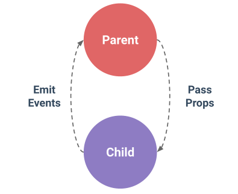

Для корректной работы приложения, необходимо обеспечить коммуникацию компонентов друг с другом. Как правило, компоненты используются в иерархической структуре, поэтому чаще всего данные передаются между родителями и потомками.
Во Vue иерархические отношения подчиняются следующему принципу:
props down, events up

Родитель передает данные потомку через входные параметры (props), а потомок посылает сообщения родителю посредством событий (events).
Передача данных вниз через props:
======================
У каждого компонента своя изолированная область видимости, поэтому напрямую обращаться к данным родительского компонента нельзя. Но можно принять от родительского компонента некоторые данные. Для этого в описании компонента есть опция props. При изменении данных в родительском компоненте, дочерние компоненты тоже получают актуальные данные через props.
Пример:
Vue.component('child', {
// определяем входной параметр
props: ['message'],
// как и другие данные, входной параметр можно использовать
// внутри шаблонов (а также и в методах, обращаясь через this.message)
template: '<span>{{ message }}</span>'
})
Пример передачи статического значения в prop от родителя:
<child message="привет!"></child>
Пример передачи динамического значения в prop от родителя (директива v-bind):
<child :my-message="parentMsg"></child>
Передача данных вверх через события:
=========================
При создании компонента-потомка компонент-родитель создает обработчик событий. Впоследствии потомок порождает события, которые обрабатываются родителем и изменяют его состояние.
Важно отметить, что потомок остается польностью независимым от всего происходящего снаружи. Он всего лишь уведомляет внешний мир о происходящим с ним, на случай, если родительскому компоненту это будет интересно.
Пример:
<div id="counter-event-example">
<p>{{ total }}</p>
<button-counter v-on:increment="incrementTotal"></button-counter>
<button-counter v-on:increment="incrementTotal"></button-counter>
</div>
// глобальная регистрация компонента
Vue.component('button-counter', {
template: '<button v-on:click="incrementCounter">{{ counter }}</button>',
data: function () {
return {
counter: 0
}
},
methods: {
incrementCounter: function () {
this.counter += 1
this.$emit('increment')
}
},
})
// корневой экземпляр Vue
new Vue({
el: '#counter-event-example',
data: {
total: 0
},
methods: {
incrementTotal: function () {
this.total += 1
}
}
})